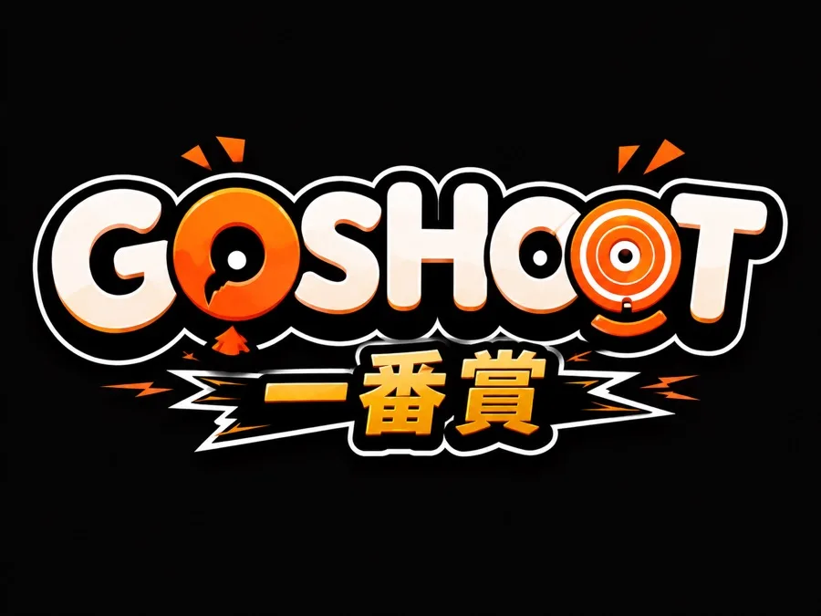
Go Shoot 線上一番賞，把日本人氣抽獎搬到線上：公開亂數封盒、可驗證公平，手機免下載直接玩。中獎可宅配到府、到店自取或折抵消費。
立即線上抽一番賞 → 怎麼玩？線上一番賞是把日本超人氣的「一番賞」抽獎搬到網路上的玩法。花固定金額抽一張籤，每一抽都必中獎，從小獎一路到最後賞（大獎）都有機會。Go Shoot 線上一番賞讓你不必到店、不必排隊，24 小時隨時開抽，並用公開亂數確保公平。
每張籤都對應一個獎品，從 A 賞到最後賞都有機會，不會槓龜。
開抽前用公開亂數（drand）封盒並公告，任何人都能事後驗算，確認沒有作弊。
手機網頁直接玩，不必下載 App、不受營業時間限制。
中獎可宅配到府、到 Go Shoot 中和門市自取，或折抵店內消費。
四個步驟，三分鐘上手。
用 Google 帳號一鍵登入，免記密碼。
依獎單標示的單抽價付款，付款完成即可開抽。
挑喜歡的主題獎單，按下抽賞、刮開命運卡揭曉獎品。
中獎後選宅配、到店取或折抵消費。
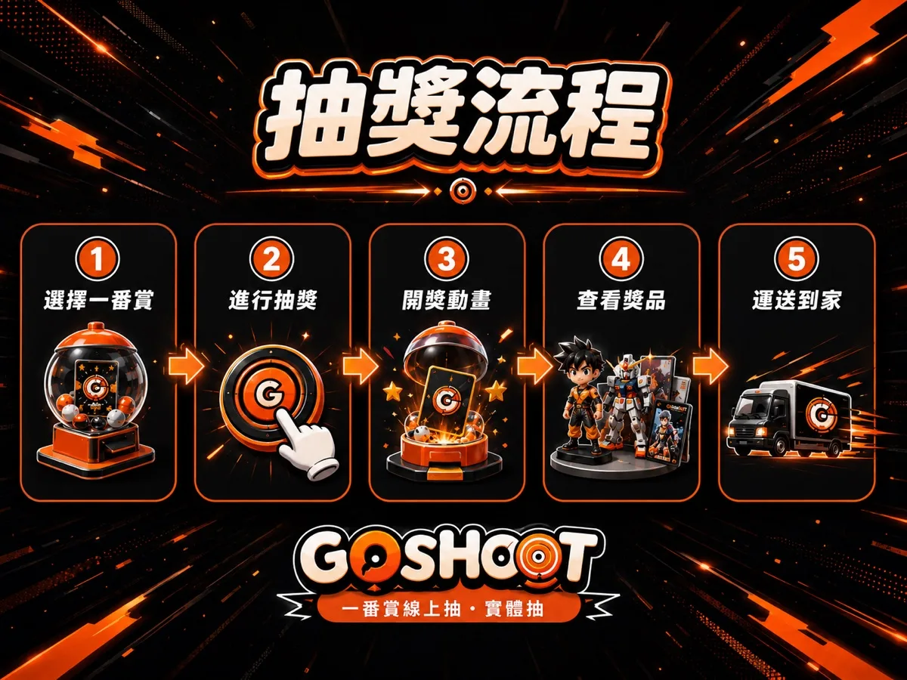
下單前請先確認以下事項。
本站販售「線上一番賞抽賞」服務：每次抽賞可獲得該獎單中的一項實體商品（每抽必中）。 單抽價格依各獎單標示為準，目前主力獎單為 NT$500～700／抽，價格已含營業稅， 並於獎單卡片與結帳頁清楚標示。各賞級的剩餘數量與中獎機率公開可查。
信用卡、ATM 虛擬帳號、超商代碼／條碼（依結帳頁實際顯示為準）。 本站交易支付服務由 綠界科技股份有限公司 提供。
中獎商品三種領取方式擇一：
① 中華郵政宅配到府：運費 NT$70／筆，會員卡等可折抵（黑鑽卡全免運）。
② 中和門市自取：免運費，備妥後通知取貨。
③ 折抵店內消費：不寄送，折抵等值金額於店內使用。
出貨時間：確認領取方式後 3 個工作日內寄出（連續假期順延）。
依《消費者保護法》第 19 條，本商品屬「客製化給付、一經拆封／開獎即無法回復原狀」
之性質，不適用七日猶豫期：抽賞結果於付款並執行抽選當下確定，恕不接受因中獎結果
不符期待而要求退費或換獎。
如遇 商品瑕疵、寄送錯誤或運送破損，請於收到商品後 7 日內 聯繫客服並提供
照片，我們將免費換貨；無同款可換時全額退款。
尚未執行抽選的付款（例如系統異常導致未開獎），可申請全額退款。
電話 0976-507-911（平日 12:00–20:00）
Email goshoot593@gmail.com／howard118008y@gmail.com
LINE 官方帳號 @722xefvm
門市：新北市中和區（24 小時無人店，詳細地址見門市頁）
本服務限 18 歲以上 參與；未滿 18 歲請由法定代理人陪同並取得同意。 本站為娛樂性商品販售，非賭博行為：每次抽賞皆必得實體商品，不提供現金回收。
關於 Go Shoot 線上一番賞，你想知道的都在這。
線上一番賞是把日本人氣的一番賞抽獎搬到網路上的玩法。花固定金額抽一張籤，每抽必中獎，從小獎到最後賞都有機會。Go Shoot 線上一番賞 24 小時可玩，手機免下載 App 直接抽。
Go Shoot 線上一番賞採用公開亂數（drand）在開抽前就把每個位置對應的獎品封盒並公告，沒有人能事先得知或竄改。完抽後公開種子，任何人都能自行驗算，做到可驗證公平。
用 Google 或手機號碼登入會員、選擇想抽的獎單、依標示的單抽價付款，付款完成後按抽賞並刮開命運卡揭曉。中獎後可選宅配、到店取或折抵消費。
三選一：宅配寄到你填的地址、到 Go Shoot 中和門市自取，或折抵成店內點數消費。
可以。它是網頁版，手機瀏覽器直接打開就能玩，不需要下載任何 App。
每個獎單單抽價不同，清楚標示在卡片上，並可看到每個賞品的中獎機率與爆獎機率。
線上 24 小時隨時抽、不受坪數與時間限制、公平性可線上驗證；實體需到店。兩者都是每抽必中。
目前有戰鬥陀螺、公仔玩具與療癒玩偶等主題，並會不定期更新上架。
即時剩餘籤數，資料來自後台，讀不到會顯示原本數字，不會開天窗。
不定期上架熱門動漫與戰鬥陀螺主題獎單，每抽必中、24H 線上抽。
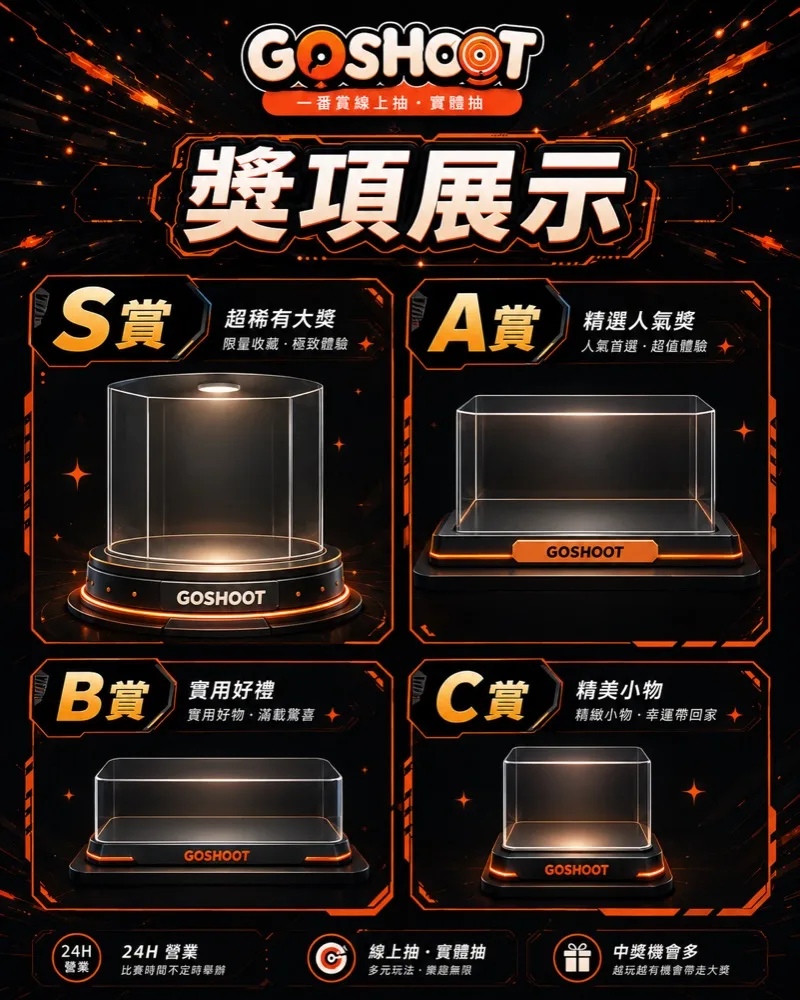
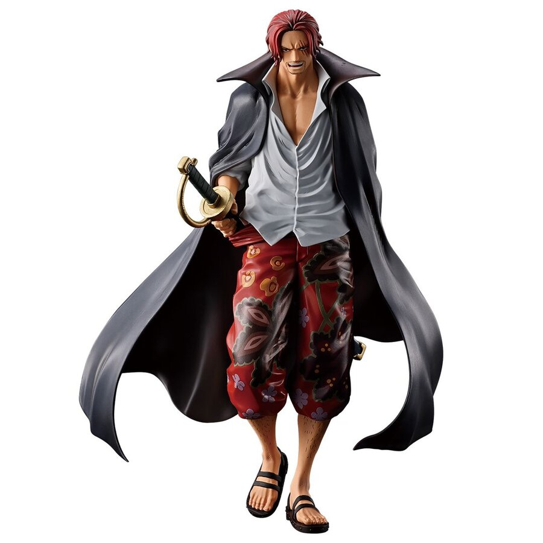
航海王人氣角色公仔與周邊，線上抽、可宅配。
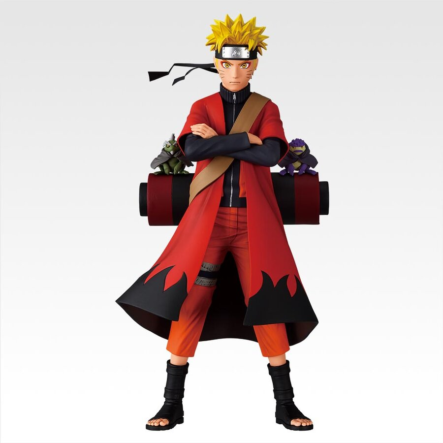
鳴人、佐助等角色公仔，每抽必中。
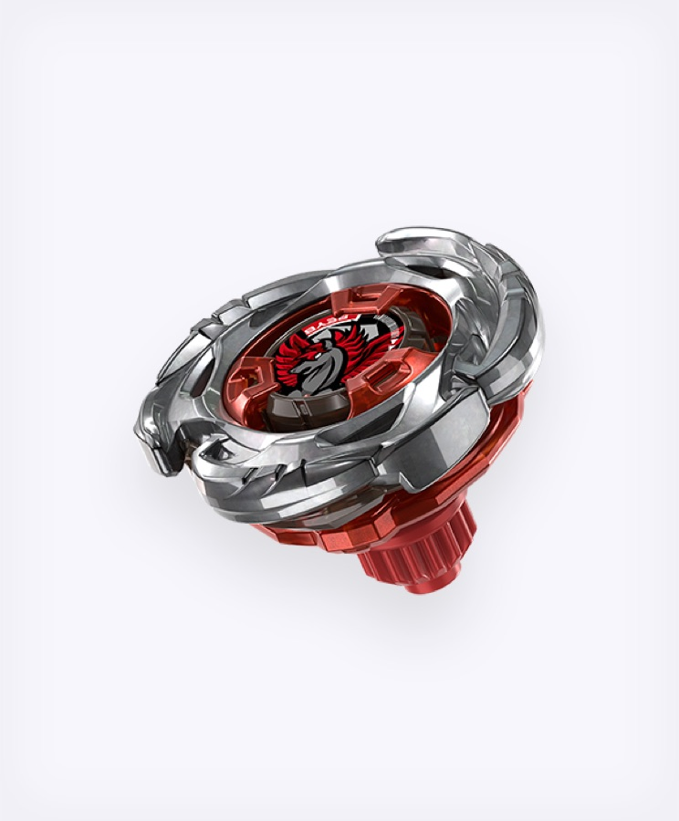
Beyblade X 限定配色陀螺，抽到能直接實戰。
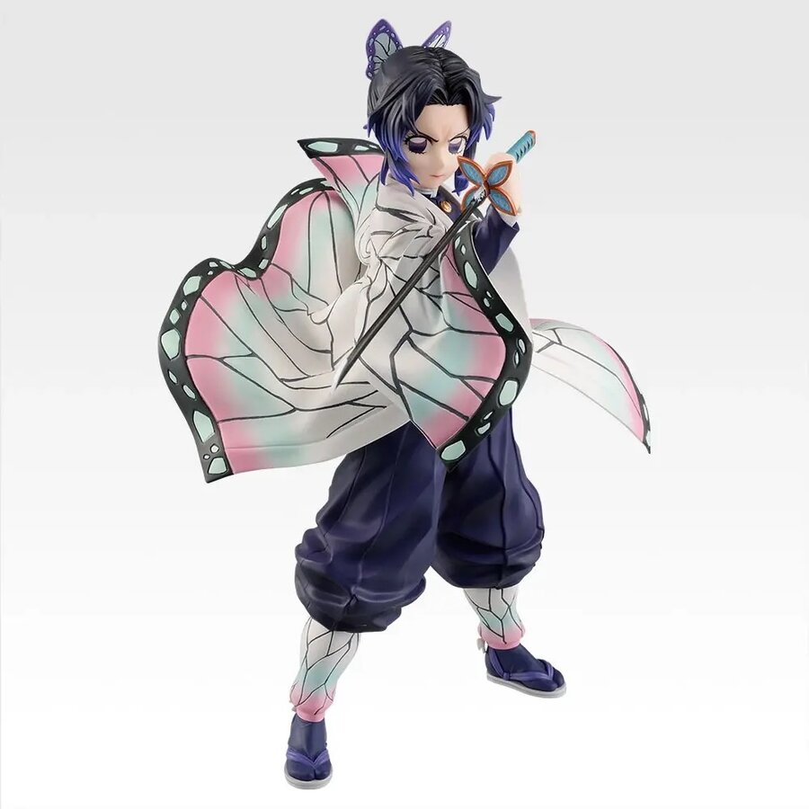
炭治郎、禰豆子等角色公仔與周邊。
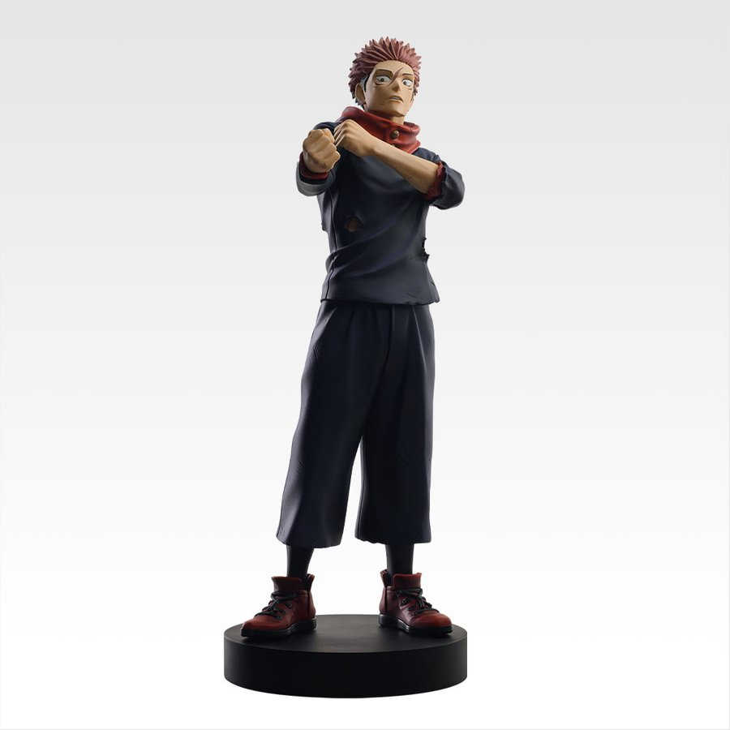
五條悟、虎杖悠仁公仔，人氣超高。
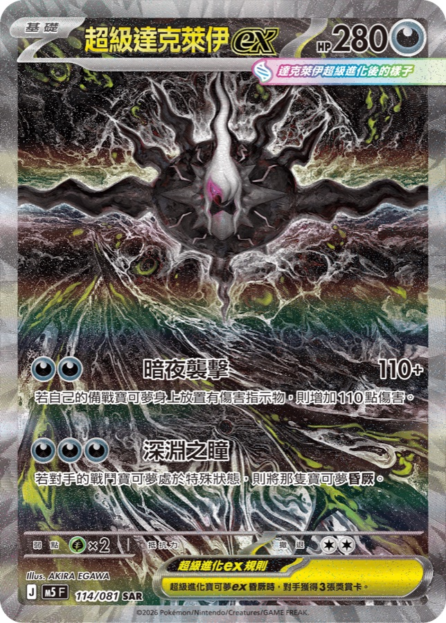
寶可夢集換式卡牌，達克萊伊 ex 稀有卡有機會抽中。
超萌絨毛玩偶，年輕客群最愛。
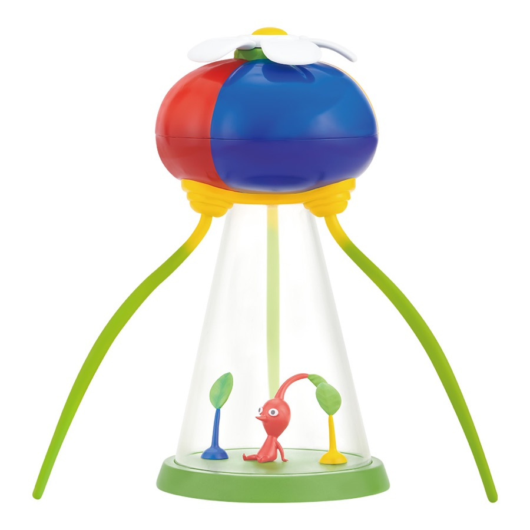
歐擬蛹小夜燈、絨毛玩偶等皮克敏周邊。
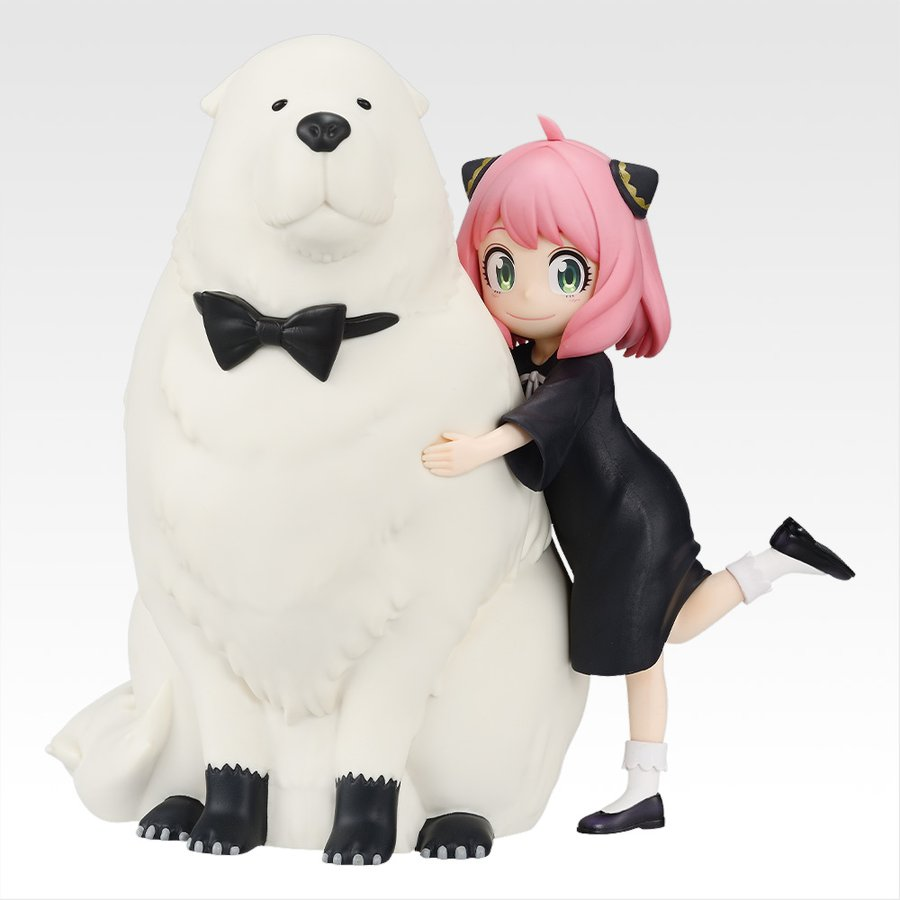
阿尼亞玩偶、角色公仔超熱門。
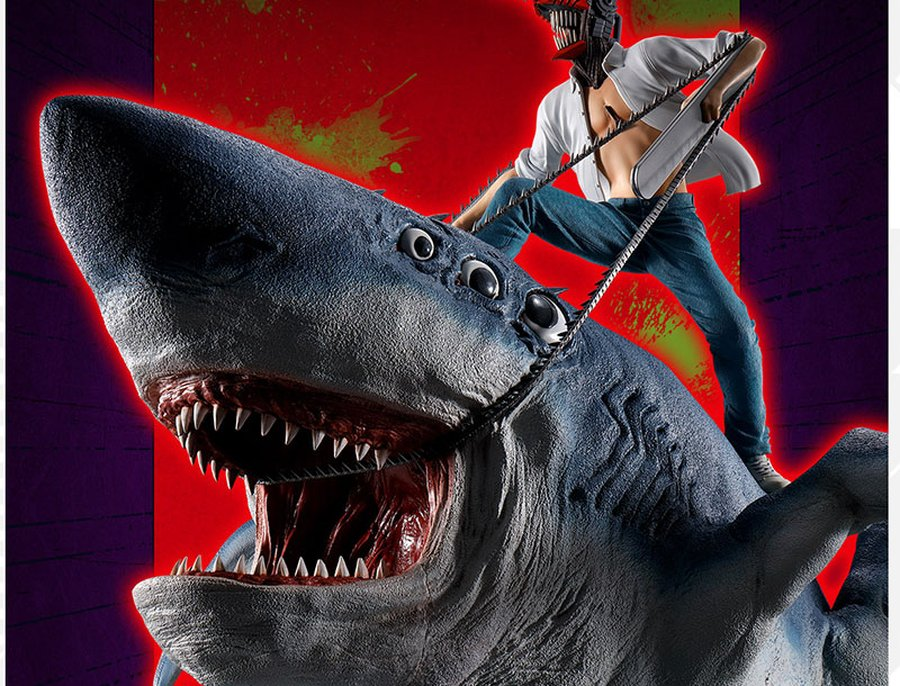
電次、帕瓦、瑪奇瑪公仔。
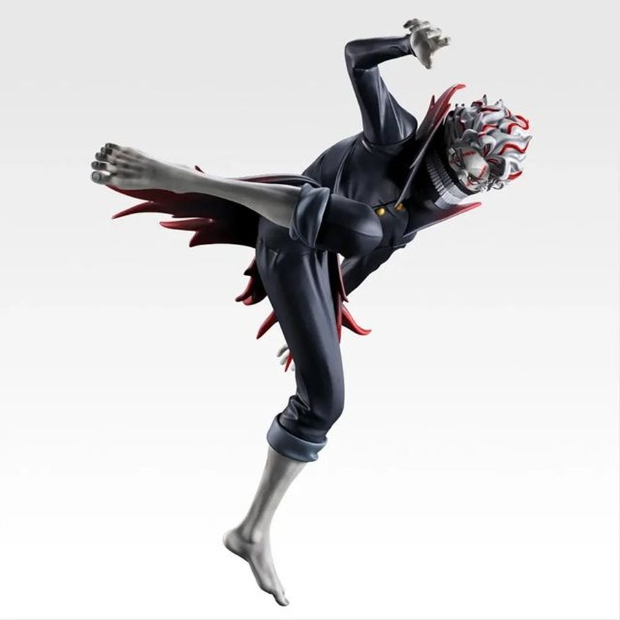
話題新作，收藏圈熱門新星。
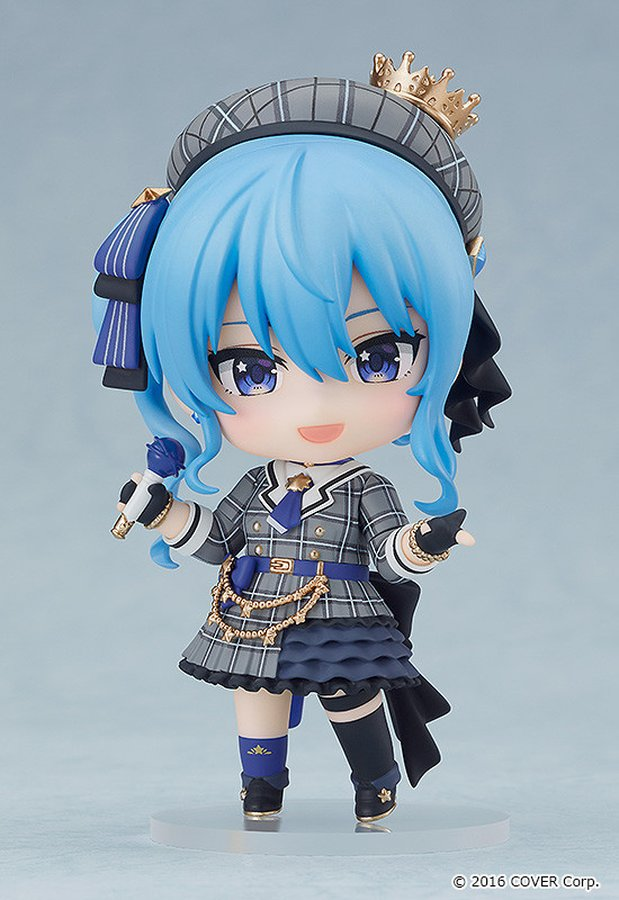
VTuber 壓克力立牌與周邊。